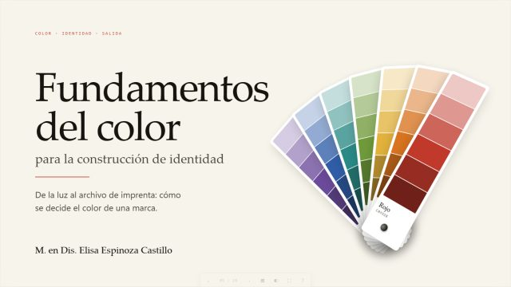
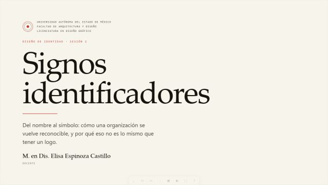
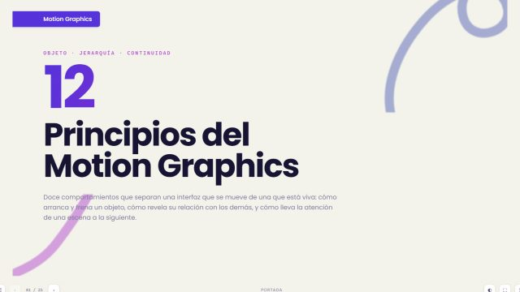

Un solo lenguaje para CodeLibri
El estilo del Aula, sacado a un sistema propio: la paleta del Figma, Inter, los componentes y el armazón con barra lateral, listos para el sitio principal, la Guía SAT, los Bloques HTML y el lector EPUB.

Base común Cada producto con su acento Violeta, menta o rosa: la tipografía, los grises y las formas se comparten; el color que marca cambia con un atributo.Cinco principios
- El código manda. Los tokens viven en
tokens/tokens.json; de ahí salen la hoja, esta documentación y la biblioteca de Figma. - Base común y acento propio. Todo el ecosistema comparte tipografía, grises, formas y los degradados de la casa. Cada producto elige su color de acento.
- Ningún texto se queda sin medir. Cada pareja de texto y fondo se comprueba al compilar, en los dos temas y con los tres acentos; si baja de 4.5:1, la compilación falla. La excepción son los degradados en sus 500, por decisión de Luis.
- Todo cuelga de
.cl. La hoja convive con otras —un WordPress, un tema de Divi— sin tocar nada fuera de su zona. - Se usa con teclado y con lector de pantalla. Foco visible, rótulos para lo que solo es dibujo y diálogos que atrapan el foco mientras están abiertos.
Empezar
Cómo se usa
Un producto necesita cinco archivos de dist/: la hoja, el guion, la cabecera, el sprite de iconos y la carpeta de fuentes. Se copian a su servidor y se enlazan así.
1. La cabecera
El contenido de codelibri-cabeza.js va en línea dentro del <head>, antes de la hoja: pone el tema y el pliegue de la barra antes de pintar, y así no hay destello claro al cargar en oscuro.
<html lang="es" data-acento="secondary2" data-cl-iconos="/sistema/iconos.svg"> <head> <script>/* el contenido de codelibri-cabeza.js */</script> <link rel="stylesheet" href="/sistema/codelibri.css"> </head>
2. El cuerpo
El <body> lleva la clase cl; el guion va al final. El acento del producto se elige en <html> con data-acento: primary (violeta, por omisión), secondary (menta) o secondary2 (rosa).
<body class="cl"> … <script src="/sistema/codelibri.js"></script> </body>
3. Los iconos
Con data-cl-iconos en <html>, el guion trae el sprite una vez y lo mete en la página. Cada icono es un <use> con el nombre precedido de cl-. El dibujo no se lee: si el icono va solo, el botón necesita aria-label.
<svg class="cl-ico" width="20" height="20" aria-hidden="true"><use href="#cl-buscar"/></svg>
4. Cambiar algo
Los valores se cambian en tokens/tokens.json y las formas en src/; nunca en dist/, que se genera. Después, una orden:
node herramientas/compilar.js
Compila la hoja, el guion, el sprite y los tokens para Figma, y mide el contraste de 144 parejas de texto y fondo. Si alguna baja de 4.5:1, se detiene y dice cuál.
Fundamentos
Color
La paleta es la del Figma de CodeLibri, paso por paso y sin retocar. Los componentes no la usan directamente: usan los tokens de uso de más abajo, que cambian con el tema y el acento.
Paleta
Al lado de cada paso, su contraste con blanco (B) y con el texto más oscuro (N). La marca verde indica que llega a 4.5:1 y vale para texto de cualquier tamaño; el recuadro señala el paso que el sistema usa como texto de esa familia en el tema claro.
Degradados
Los tres de la casa, con los colores en su paso 500. El texto blanco sobre ellos queda en 1.49:1 en el extremo menta y en 3.25:1 en el rosa: es una decisión tomada con las cifras delante, no un descuido.
Tokens de uso
Lo que usan los componentes. Cada uno tiene un valor en claro y otro en oscuro; los del acento cambian además con data-acento.
| Token | Claro | Oscuro | Para qué |
|---|
Fundamentos
Temas y acentos
El tema se pone con data-theme="dark" en <html>; el interruptor de la barra superior lo cambia y lo recuerda. El acento, con data-acento: en <html> vale para todo el producto, y en una zona de la página solo para esa zona. Así el sitio principal puede enseñar cada producto con su color.
Familias sueltas
Aparte del acento, cualquier pieza puede tomar el color de una familia con cl-f-primary, cl-f-secondary o cl-f-secondary2: una etiqueta, un recuadro de icono, un avatar. Es lo que en el Aula da un color a cada tópico.
Fundamentos
Tipografía
Inter, variable del 400 al 800, servida desde el propio dominio: la página no pide nada a otro servidor. Los títulos van en 700 y 800 con el interletraje cerrado; el texto de interfaz, en 500 y 600. Los tamaños son los del Aula.
displayclamp(38–54) · 800Aula CodeLibritituloclamp(24–32) · 800 · h1Fundamentos del colorencabezado26 · 800Editar fichaseccion20 · 700 · h2Presentaciones interactivassubseccion17 · 700 · h3Lo más nuevoentrada17 · 400 · grisMaterial de diseño gráfico y desarrollo web, abierto a quien quiera consultarlo.cuerpo15 · 400Un texto de lectura: las presentaciones se abren en el navegador, sin instalar nada.ui14 · 500–600Guardar la fichanota13 · gris28 láminas · actualizada el 15 de septiembrerotulo11 · 700 · mayúsculasTópicos- Los encabezados sin clase ya salen con su tamaño:
h1título,h2sección,h3subsección. Las clases sirven para dar a un elemento el aspecto de otro nivel sin cambiar la jerarquía. - El nombre de la marca en un titular va con
cl-degradado, el de los tres colores. - Para texto largo,
cl-prosa: medida acotada, más interlineado y enlaces subrayados.
Fundamentos
Espacio y forma
Múltiplos de 4 para el espacio; esquinas de 6, 8, 12 y 16 según el tamaño de la pieza; sombras cortas en reposo y una más abierta, con tinte de la marca, al pasar por encima.
Espacio
Esquinas
Sombras
Movimiento
- 0.15 s para lo inmediato: el botón que se levanta, el fondo de un elemento de lista.
- 0.2 s para bordes, colores y sombras.
- 0.25–0.3 s para lo que se desplaza: el cajón, la perilla del interruptor, la barra que se pliega.
- Con «reducir movimiento» en el sistema operativo, todo se apaga.
Fundamentos
Iconos
Trazos de 1.8 sobre una rejilla de 24, con puntas y uniones redondeadas. Heredan el color del texto que los rodea. Los del Aula llevan ahora el nombre de lo que dibujan, no del tópico al que servían. Con un clic se copia el marcado.
Componentes
Botones
Uno principal por pantalla, con el degradado de la casa; el resto, secundarios. El de apoyo lleva el degradado violeta-rosa y se reserva para invitar a apoyar. Un enlace que lleva a otra página también puede tener forma de botón.
Variantes
Tamaños y estados
- Solo icono:
aria-labelsiempre. El dibujo no se lee. - Apagado:
disableden un botón;aria-disabled="true"si tiene que seguir alcanzándose con el tabulador, como las flechas de un carrusel en su extremo. - Pulsado que se queda pulsado —me gusta, favorito—:
aria-pressed.
Componentes
Campos
El rótulo envuelve al campo, así se anuncia sin necesidad de un id. La ayuda va debajo, en letra pequeña; el error, con aria-invalid en el campo y el mensaje enlazado con aria-describedby. El foco lleva el anillo del acento.
Buscador
Selector con dibujo
Para elegir por lo que se ve —un icono, un color— y no por el nombre. La casilla queda oculta a la vista pero no al teclado.
Componentes
Interruptores
Un <button role="switch"> con aria-checked: se anuncia como interruptor y dice si está puesto. El de tema es el del Aula, con el sol y la luna; lo mueve el guion por sí solo con data-cl-tema.
Componentes
Etiquetas
Cuatro piezas pequeñas que se confunden si no se separan. La etiqueta clasifica, la insignia llama la atención, el estado dice en qué situación está algo y la píldora cuenta.
Componentes
Tarjetas
Superficies planas con filete y sombra corta. La que entera es enlace abre la sombra en el tono de la marca al pasar por encima, y su título toma el color del acento.
De contenido

Nuevo Identidad y marca Signos identificadores Los tipos de signo con que una organización se hace reconocible, y qué exige cada uno. Elisa Espinoza Castillo24
Animación y movimiento Los doce principios del motion graphics Doce laboratorios en vivo para ver cada principio resuelto. Luis E. Maldonado Gil10/25 Código y web Una tarjeta sin imagen todavía Mientras llega la portada, el recuadro toma el color de su familia. CodeLibriDocumentoHorizontal
Icono en su recuadro, nombre y una línea de apoyo. Se distingue de un vistazo de las de contenido: es para lo que se recorre, como una ruta, y no para lo que se abre.
Ficha y datos clave
Métricas
Lo que se ha visto en los últimos 30 días.
- 1 284Vistas
- 312Me gusta
- 42Piezas publicadas
Componentes
Avisos
El color nunca va solo: el texto dice lo que pasó y el icono lo refuerza. Los cuatro usan las escalas de estado del Figma —Success, Warning, Danger e Info— en el paso que llega a 4.5:1.
Ficha guardada.
A esta ficha le falta el QR. Cómo generarlo
No se pudo guardar: revise los permisos de la carpeta datos/.
Una dirección que empieza por https:// se abre en otra pestaña.
Flotante y vacío
Nada con esa palabra
Ninguna pieza ni lámina menciona «tipografía variable». Pruebe con otra palabra o vea todo el catálogo.
Ver todo el catálogoComponentes
Ventanas y menús
La ventana modal se abre con data-cl-abrir="id" y se cierra con Escape, con la × o pulsando fuera. Al abrirse se lleva el foco y lo devuelve al cerrarse. El menú, con data-cl-menu y aria-controls.
¿Retirar esta ruta?
Las presentaciones no se tocan: siguen en el catálogo y en las demás rutas donde estén.
Selector segmentado y lista plegable
Construir una marca3 presentaciones
Primeros pasos en la web4 presentaciones
Componentes
Datos
La tabla apila sus filas en un teléfono si lleva cl-tabla-apilable: deja de verse como tabla pero el lector sigue oyendo filas y celdas. El avance, en barra o en anillo, siempre con su cifra.
| Presentación | Tópicos | Estado | Vistas |
|---|---|---|---|
| Diseño de Identidad | |||
| Fundamentos del color28 láminas | Identidad, Fundamentos | Publicada | 214 |
| Personalidad de marca20 láminas | Identidad | Oculta | 97 |
Va por la lámina 10 de 25
@misc{aula-ident-color,
author = {{Espinoza Castillo}, Elisa},
title = {Fundamentos del color para la identidad},
year = {2026}
}
Armazón
Armazón
La página entera: barra lateral fija a la izquierda, barra superior con el buscador y las acciones, el contenido y el pie. Vidrio solo en las dos barras. Esta misma documentación está hecha con él.
- Barra lateral. Marca arriba, a la altura de la barra superior; grupos de enlaces con rótulo; la opción de la página actual se marca con
aria-current, que además la anuncia al lector. - Plegada a iconos. Si la página trae el botón con
data-cl-plegar, se pliega y lo recuerda. Para que una página nazca plegada —un visor—,data-cl-lat-inicial="plegada"en<html>. - Cajón. A 900 px o menos la barra sale de lado con el botón de menú, deja un velo detrás, atrapa el foco y se cierra con Escape.
- Barra superior. En pantallas estrechas los botones con rótulo (
cl-txt) se quedan en su icono; el rótulo sigue para el lector. - Contenido. Secciones sin caja, separadas por 52 px de aire; las anclas quedan por debajo de la barra superior.
El esqueleto
<body class="cl">
<a class="cl-saltar" href="#contenido">Saltar al contenido</a>
<div class="cl-armazon">
<aside class="cl-lat" id="lateral" aria-label="Navegación">
<a class="cl-marca" href="/"><img src="logo.svg" alt=""><span><b>CodeLibri</b><em>Producto</em></span></a>
<nav class="cl-grupo" aria-label="Principal">
<a href="/" aria-current="page">…icono…<span>Inicio</span></a>
</nav>
<p class="cl-rotulo" id="g1">Sección</p>
<nav class="cl-grupo" aria-labelledby="g1">…</nav>
<div class="cl-lat-pie">
<button class="cl-plegar" type="button" data-cl-plegar aria-controls="lateral">…<span>Plegar la barra</span></button>
</div>
</aside>
<div class="cl-principal">
<header class="cl-superior">
<button class="cl-boton cl-boton-icono cl-solo-estrecho" type="button" data-cl-abrir-lat
aria-controls="lateral" aria-expanded="false" aria-label="Abrir la navegación">…</button>
<form class="cl-buscador" role="search">…</form>
<div class="cl-superior-acciones">…</div>
</header>
<main id="contenido" class="cl-contenido" tabindex="-1">…</main>
<footer class="cl-pie">…</footer>
</div>
</div>
<div class="cl-velo" data-cl-velo hidden></div>
<script src="/sistema/codelibri.js"></script>
</body>